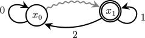
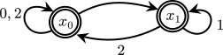
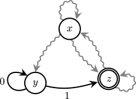
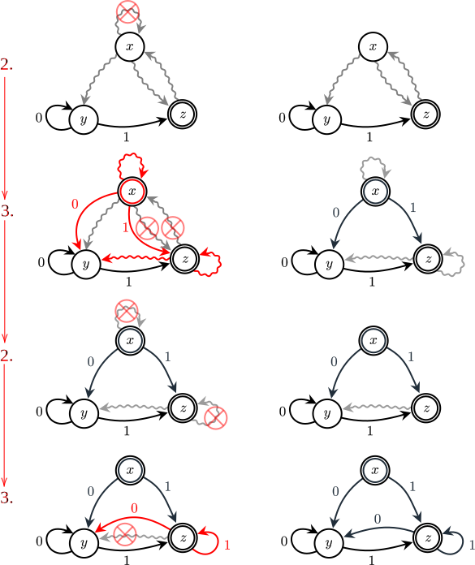
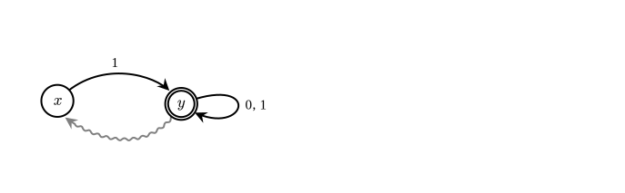
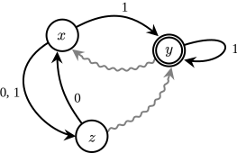
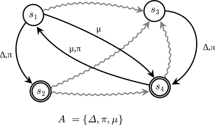
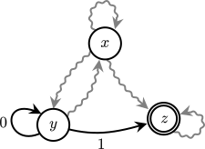

Silent Transitions
In the previous two lectures, we saw that the regular languages and finitely recognizable languages coincide.
This was called Kleene's theorem, and in the end it took a lot of algebraic reasoning to get there.
In particular, we needed to be able to solve left-affine systems of equations, which looked bit like this:
\[\begin{aligned}
x_1 &= \varepsilon + (a + b)x_1 + bx_2 \\
x_2 &= (a + b + c)x_2 + cx_3 \\
x_3 &= bx_1 + ax_3
\end{aligned}\]
In a manner consistent with most other applied math fields, the subject matter we were studying boiled down to being able to solve certain systems of equations.
Unguarded Systems of Equations
For automata, the key feature of these systems of equations had to do with the empty word property.
Namely, that the regular expressions appearing to the left of each variable did not have the empty word property.
The reason this was important was that it allowed us to use Arden's (left) rule to eliminate one indeterminate variable from the system at a time.
But what happens when we let go of this requirement?
Can we solve systems of equations like the one below?
\[\begin{aligned}
x_1 &= \varepsilon + (a + b)x_1 + \varepsilon x_2 \\
x_2 &= \varepsilon x_1
\end{aligned}\]
Notice that two of the coefficients are \(\varepsilon\), so this system of equations is not left-affine (by definition).
We call systems of equations of this form (left-affine but without empty word property requirement) unguarded.
Using Kleene's algorithm, we saw that left-affine systems of equations always have one, and only one, solution.
In general, unguarded systems of equations do not have unique solutions.
For example, consider the following system of equations:
\[
x_1 = x_1
\]
...OK, well every language is going to satisfy that.
(More Solutions)
How many different solutions are there of the following system of equations?
\[\begin{aligned}
x_1 &= x_1 + x_2 \\
x_2 &= x_1
\end{aligned}\]
What we are really looking for is the the least solution: the smallest language (set of words) that satisfies the requirements of the equations.
The word "least" here refers to the set-inclusion of languages, and we'll define this precisely next.
Also, to make the terminology a bit easier, let's redefine the phrase "left-affine" to fit the new situation.
(RegEx Inclusion)
Let \(r_1,r_2 \in \mathit{RExp}\) be regular expressions.
Then we write \(r_1 \le_{\mathcal L} r_2\) and say that \(r_1\) is below \(r_2\) if \(\mathcal L(r_1) \subseteq \mathcal L(r_2)\).
So, for example, \(\{a, b\} \subseteq \{a, b, c\}\).
By definition,
\[
a + b \le_{\mathcal L} a + b + c
\]
Conspicuosly, \((a + b) =_{\mathcal L} (a + b) + (a + b + c)\).
(Below Algebraically)
Show that for any regular expressions \(r_1, r_2 \in \mathit{RExp}\),
\[
r_1 \le_{\mathcal L} r_2 \quad \text{if and only if} \quad r_1 =_{\mathcal L} r_1 + r_2
\]
Use this to show that \(\emptyset \le_{\mathcal L} s_1\) for all \(s_1 \in \mathit{RExp}\).
This will come up later.
For now, we need to define what it means to be a least solution.
(Least Solutions)
A
left-affine system of equations is a system of equations of the form
\[\begin{aligned}
x_1 &= b_1 + r_{11} x_1 + r_{12} x_2 + \cdots + r_{1n} x_n \\
x_2 &= b_2 + r_{21} x_1 + r_{22} x_2 + \cdots + r_{2n} x_n \\
&\hspace{2em} \vdots \\
x_n &= b_n + r_{n1} x_1 + r_{n2} x_2 + \cdots + r_{nn} x_n
\end{aligned}\]
where \(b_i,r_{ij} \in \mathit{RExp}\) are regular expressions.
We say that the system is
guarded if none of the \(r_{ij}\) have the empty word property, and
unguarded if at least one of the \(r_{ij}\) does have the empty word property.
The variables \(x_1, \dots, x_n\) are called the
indeterminate variables of the system.
A solution to the left-affine system of equations above is a sequence of regular expressions \(s_1, s_2, \dots, s_n\) such that
\[\begin{aligned}
s_1 &=_{\mathcal L} b_1 + r_{11} s_1 + r_{12} s_2 + \cdots + r_{1n} s_n \\
s_2 &=_{\mathcal L} b_2 + r_{21} s_1 + r_{22} s_2 + \cdots + r_{2n} s_n \\
&\hspace{2em} \vdots \\
s_n &=_{\mathcal L} b_n + r_{n1} s_1 + r_{n2} s_2 + \cdots + r_{nn} s_n
\end{aligned}\]
A least solution to the left-affine system of equations is a sequence of regular expressions \(t_1,t_2,\dots, t_n\) such that for any solution to the system \(s_1, \dots, s_n\) and any \(i = 1,\dots, n\), we have \(t_i \le_{\mathcal L} s_i\).
For example, the least solution to the system of equations
\[
x_1 = x_1
\]
is \(t_1 = \emptyset\), because the regular expression \(s_1\) is a solution to the system and \(\emptyset \le_{\mathcal L} s_1\) always.
(Greatest Solution)
Consider the following unguarded left-affine system of equations.
\[\begin{aligned}
x_1 &= \varepsilon + x_1 + ax_2 \\
x_2 &= x_1 + x_2
\end{aligned}\]
Set \(x_1 = A^*\) and \(x_2 = A^*\).
Is that a solution?
Intuitively, the least solution to a left-affine system of equations should only include the words it must include in order to satisfy the constraints it describes.
(One Equation)
If we wanted to find the least \(s_1\) such that
\[
s_1 = \varepsilon + s_1 + as_1
\]
then we
know that \(\varepsilon \in \mathcal L(s_1)\).
This comes from the first term on the right-hand side.
What else do we need to include in \(\mathcal L(s_1)\)?
Well, we know that for any \(w \in \mathcal L(s_1)\), we also need \(aw \in \mathcal L(s_1)\).
So far, we have shown that
\[
\varepsilon, a, aa, aaa, \dots \in \mathcal L(s_1)
\]
In other words, at the very least \(a^* \le_{\mathcal L} s_1\).
Now, the second term on the right-hand side says that for any \(w \in \mathcal L(s_1)\), we know that \(w \in \mathcal L(s_1)\)... did that add anything?
Not really!
So, what if we try \(s_1 = a^*\)?
We'd end up with
\[\begin{aligned}
a^*
&\stackrel{?}{=_{\mathcal L}} \varepsilon + a^* + aa^* \\
&=_{\mathcal L} \varepsilon + aa^* + a^* \\
&=_{\mathcal L} a^* + a^* \\
&=_{\mathcal L} a^*
\end{aligned}\]
and look at that!
Indeed, \(a^*\) is a solution.
By the reasoning above, since \(a^*\) contains all the words it must include, it's also the least solution.
This actually leads to a really nice approach to finding least solutions to unguarded left-affine systems of equations: eliminate any repeated indeterminate variables and then find the unique solution.
(Untying Loops)
Consider the single equation \(\text{(*)}\) below, where \(r\) is any regular expression that may or may not contain other indeterminate variables:
\[
x = r + x \qquad \text{(*)}
\]
Then the least solution \(\text{(*)}\) is also the least solution to the equation
\[
x = r
\]
(Untying Loops by Hand)
Consider the left-affine system of equations below.
\[\begin{aligned}
x_1 &= \varepsilon + x_1 + ax_2 \\
x_2 &= x_1 + bx_2 + x_3 \\
x_3 &= \varepsilon + x_2 + x_3
\end{aligned}\]
By the Untying Loops Theorem, we can delete the \(x_3\) on the right-hand side: the least solution of the last equation is the same as the least solution of
\[
x_3 = \varepsilon + x_2
\]
We can do the same for \(x_1\) to wind up with the system of equations
\[\begin{aligned}
x_1 &= \varepsilon + ax_2 \\
x_2 &= x_1 + bx_2 + x_3 \\
x_3 &= \varepsilon + x_2
\end{aligned}\]
with the same least solution.
This is still unguarded though... But hope is not lost: let's try plugging \(x_2\) into \(x_3\).
\[\begin{aligned}
x_1 &= \varepsilon + ax_2 \\
x_2 &= x_1 + bx_2 + x_3 \\
x_3 &= \varepsilon + x_1 + bx_2 + x_3
\end{aligned}\]
Repeating the process gives
\[\begin{aligned}
x_1 &= \varepsilon + ax_2 \\
x_2 &= x_1 + bx_2 + x_3 \\
x_3 &= \varepsilon + x_1 + bx_2
\end{aligned}\]
Plugging \(x_1\) into \(x_3\) now turns this into
\[\begin{aligned}
x_1 &= \varepsilon + ax_2 \\
x_2 &= x_1 + bx_2 + x_3 \\
x_3 &= \varepsilon + \varepsilon + ax_2 + bx_2
\end{aligned}\]
Aha! Now the equation for \(x_3\) is guarded.
Plugging \(x_3\) and \(x_1\) into \(x_2\) lands us with
\[\begin{aligned}
x_1 &= \varepsilon + ax_2 \\
x_2 &= \varepsilon + ax_2 + bx_2 + \varepsilon + \varepsilon + ax_2 + bx_2 \\
x_3 &= \varepsilon + \varepsilon + ax_2 + bx_2
\end{aligned}\]
Simplifying a bit, we are now left with solving the guarded left-affine system of equations
\[\begin{aligned}
x_1 &= \varepsilon + ax_2 \\
x_2 &= \varepsilon + ax_2 + bx_2 \\
x_3 &= \varepsilon + ax_2 + bx_2
\end{aligned}\]
which we can solve using Kleene's algorithm.
(Least Solutions from Untying)
Again, consider the following unguarded left-affine system of equations.
\[\begin{aligned}
x_1 &= \varepsilon + x_1 + ax_2 \\
x_2 &= x_1 + x_2
\end{aligned}\]
Find the least solution to the system.
Automata with Silent Transitions
Just like how guarded left-affine systems came from automata, unguarded ones also come from a type of automaton.
(Automaton with Silent Transitions)
An
automaton with silent transitions is a five-tuple
\[
\mathcal B = (Q, A, \delta, \leadsto, F)
\]
where \((Q, A, \delta, F)\) is a (standard) automaton and \(\leadsto\) is a relation,
\[
{\leadsto} \subseteq Q \times Q
\]
If \((x, y) \in {\leadsto}\), then we write \(x \leadsto y\) and call this relation a
silent transition.
The left-affine system of equations \(\mathcal S(\mathcal B)\) corresponding to \(\mathcal B\) is the left-affine system of equations
\[\begin{aligned}
x_1 &= b_1 + (r_{11} + e_{11}) x_1 + (r_{12} + e_{13}) x_2 + \cdots + (r_{1n} + e_{in}) x_n \\
x_2 &= b_2 + (r_{21} + e_{21}) x_1 + (r_{22} + e_{23}) x_2 + \cdots + (r_{2n} + e_{2n}) x_n \\
&\hspace{2em} \vdots \\
x_n &= b_n + (r_{n1} + e_{n1}) x_1 + (r_{n2} + e_{n3}) x_2 + \cdots + (r_{nn} + e_{nn}) x_n
\end{aligned}\]
where
\[
b_i = \begin{cases}
\varepsilon &\text{if \(x_i \in F\)} \\
\emptyset &\text{if \(x_i \notin F\)}
\end{cases}
\qquad
e_{ij} = \begin{cases}
\varepsilon &\text{if \(x_i \leadsto x_j\)} \\
\emptyset &\text{otherwise} \\
\end{cases}
\]
and
\[
r_{ij} = \sum_{(x_i, a, x_j) \in \delta} a
\]
Silent transitions are also called \(\varepsilon\)-transitions, because they can be thought of as "reading an \(\varepsilon\)".
Let's start by doing a formal analysis of one automaton with silent transitions.
(First Automaton with \(\varepsilon\)s)
Consider the automaton with silent transitions below.

An automaton with silent transitions \(\mathcal B = (Q, A, \delta, \leadsto, F)\) where
\[\begin{aligned}
Q &= \{x_0, x_1\} \\
A &= \{0, 1, 2\} \\
\delta &= \{(x_0, 0, x_0), (x_1, 2, x_0), (x_1, 1, x_1)\} \\
\leadsto &= \{(x_0, x_1)\} \\
F &= \{x_1\} \\
\end{aligned}\]
The left-affine system of equations corresponding to this automaton with silent transitions is
\[\begin{aligned}
x_0 &= 0x_0 + x_1 \\
x_1 &= \varepsilon + 2x_0 + 1x_1
\end{aligned}\]
If you plug \(x_1\) into \(x_0\) and simplify, you end up with the guarded left-affine system
\[\begin{aligned}
x_0 &= \varepsilon + (0 + 2)x_0 + 1x_1 \\
x_1 &= \varepsilon + 2x_0 + 1x_1
\end{aligned}\]
Note how the guarded left-affine system of equations corresponds to a (standard) automaton, namely the one below:

\(\mathcal B\) with silent transitions removed.
Finding the language accepted by the state \(x_0\) in the automaton with silent transitions \(\mathcal B\) then amounts to finding the language accepted by the state \(x_0\) in the automaton above.
There is also a direct characterization of the strings that are accepted by a state in an automaton with silent transitions, without the need for systems of equations.
It's more appropriate to state it as a definition first, and then frame the situation just described as a consequence of the definition.
We'll do that later on.
In the definition below, we are going to write \(\leadsto^*\) for one or more silent transitions in a row.
(Accept with \(\varepsilon\)-Transitions)
Let \(\mathcal B = (Q, A, \delta, \leadsto, F)\) be an automaton with silent transitions, let \(x \in Q\), and consider a word \(w = a_1 \cdots a_n \in A^*\).
If \(n = 0\), \(x\) accepts \(w = \varepsilon\) with silent transitions if there is a path
\[
x_0 \leadsto x_1 \leadsto \cdots \leadsto x_n
\]
and \(x_n \in F\).
Then \(x\) accepts \(w\) with silent transitions if there is a path
\[
x \leadsto^* \cdot \xrightarrow{a_1} x_1 \leadsto^* \cdot \xrightarrow{a_2} x_2 \leadsto^* \cdot \xrightarrow{a_3} \cdots \leadsto^* \cdot \xrightarrow{a_n} x_n
\]
The language accepted by \(x\) with silent transitions is the language
\[
\mathcal L_\varepsilon(\mathcal B, x) = \{w \in Q \mid \text{\(x\) accepts \(w\) with silent transitions}\}
\]
A language \(L \subseteq A^*\) is finitely recognizable with silent transitions if there is a finite automaton with silent transitions \(\mathcal B\) with a state \(x\) such that \(L = \mathcal L_\varepsilon(\mathcal B, x)\).
The family of languages that are finitely recognizable by silent transitions is written \(\mathsf{Fin}_\varepsilon\).
(Is it Accepted?)
Consider, again, the automaton with silent transitions below.
Determine which of the strings below is accepted with silent transitions by the state \(x_0\).
If it is accepted, write down the path of silent transitions and standard transitions that witnesses the word being accepted.
- \(1\)
- \(12\)
- \(121\)
- \(\varepsilon\)
- \(0\)
- \(01201\)
Killing \(\varepsilon\)s with a \(\dagger\)
Instead of going through determining the system of equations every time, there is a more direct transformation of automata with silent transitions into automata without them.
It directly (literally!!) follows the substitution approach above, but is perhaps a bit more visual in nature.
The name of the following algorithm is the dagger construction, and it goes like this: given an automaton with silent transitions \(\mathcal B\), we perform the following sequence of transformations until there are no longer and silent transitions.
- If there are no silent transitions, stop.
-
Remove all silent self loops.
-
Apply the following transformations simultaneously for all states \(x\) and their outgoing transitions:
- if \(x \leadsto y\) and \(y \xrightarrow{a} z\), then delete the silent transition \(x \leadsto y\) and add the transition \(x \xrightarrow{a} z\).
-
For each state \(x\), if \(x \leadsto y\) and \(y \leadsto z\), then delete the silent transition \(x \leadsto y\) and add the silent transition \(x \leadsto z\).
-
For each state \(x\), if \(x \leadsto y\) and \(y \in F\), then add \(x\) to \(F\).
- Return to 1.
The automaton you obtain at the end is called \(\mathcal B^\dagger\) (the little symbol in the exponent \(\dagger\) is called "dagger").
It has all the same states as the original \(\mathcal B\), but its transitions and accepting states might be completely different.
(A Complete Worked-out Example)
In the figure below, you can see a state diagram of an automaton with silent transitions \(\mathcal B\).

An automaton with silent transitions \(\mathcal B\).
Below, you can see the dagger construction applied to \(\mathcal B\) one step at a time: first, step 2 of the algorithm, is to delete all silent self-loops.
After, simultaneously consider all silent transitions at once, and apply the transformations of "following-through" the silent transitions.

The dagger construction applied to \(\mathcal B\).
The very last automaton is \(\mathcal B^\dagger\).
Every automaton without silent transitions can be turned into an automaton with silent transitions by setting \({\leadsto} = \{\}\).
This makes it clear that
\[
\mathsf{Fin} \subseteq \mathsf{Fin}_\varepsilon
\]
The dagger construction witnesses the reverse inclusion.
To summarize, we have the following theorem.
(Killing \(\varepsilon\)s with a \(\dagger\))
Let \(\mathcal B = (Q, A, \delta, \leadsto, F)\) be an automaton with silent transitions, and let \(x \in Q\).
Then \[
\mathcal L_\varepsilon(\mathcal B, x) = \mathcal L(\mathcal B^\dagger, x)
\]
That is, a word is accepted by \(x\) with silent transitions if and only if it is accepted (in the standard sense) by the dagger of \(\mathcal B\).
Consequently,
\[
\mathsf{Fin}_\varepsilon = \mathsf{Fin}
\]
(Follow-Through)
For each of the following, compute the automaton that corresponds to the automaton with silent transitions below and then find the language accepted by the state \(x\) or \(s_1\).



(Follow Through 2)
Use the dagger construction to transform the automaton with silent transitions into a standard automaton and then determine the languages accepted by each state.

An automaton with silent transitions \(\mathcal B = (Q, A, \delta, \leadsto, F)\), where
\[\begin{aligned}
Q &= \{x, y, z\} \\
A &= \{0, 1\} \\
\delta &= \{ (y, 0, y), (y, 1, z) \} \\
{\leadsto} &= \{ (x, x) (x, y), (x, z), (y, x), (z, z) \} \\
F &= \{z\}
\end{aligned}\]
As we have already made the case for, automata with silent transitions are equivalent to automata without silent transitions.
But silent transitions are they are also pretty convenient for expressing certain automaton constructions.
(Composing)
Draw two state diagrams of automata \(\mathcal A_1\) and \(\mathcal A_2\) over the alphabet \(A = \{1, 2\}\) with states that accept the languages
\[\begin{aligned}
L_1 &= \{w \in A^* \mid \mathrm{sum}(w) \text{ is even} \} \\
L_2 &= \{w \in A^* \mid \mathrm{sum}(w) \text{ is not a multiple of \(3\)} \}
\end{aligned}\]
respectively.
By drawing one silent transition between the two state diagrams, construct an automaton with silent transitions with a state that accepts \(L_3 = L_1 \cdot L_2\).